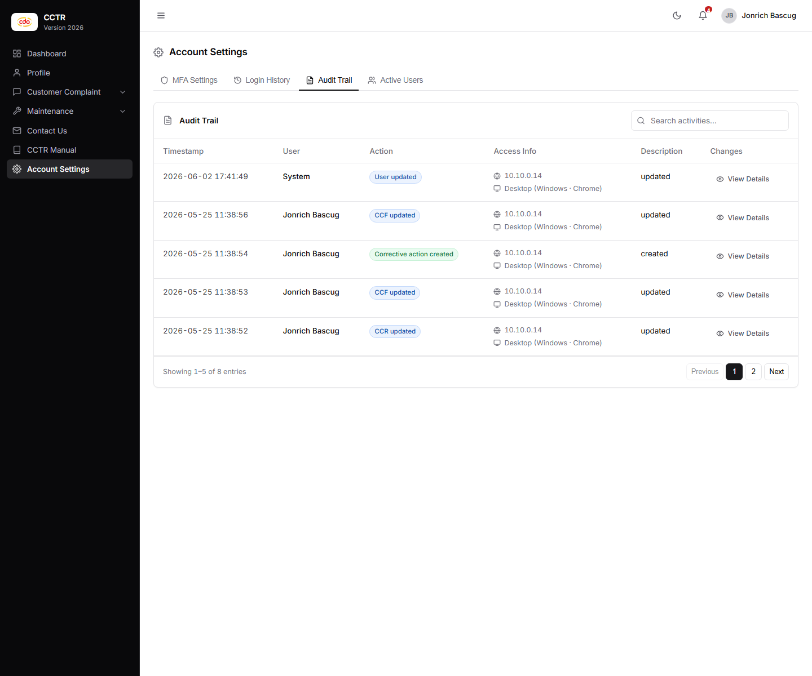
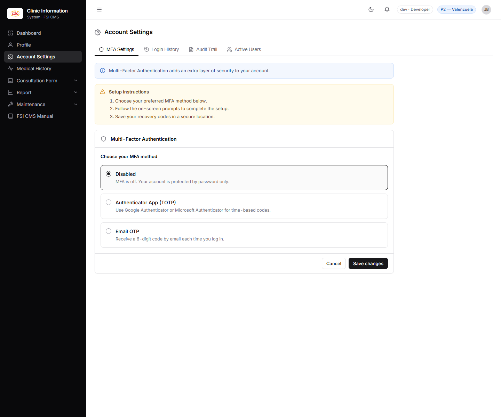
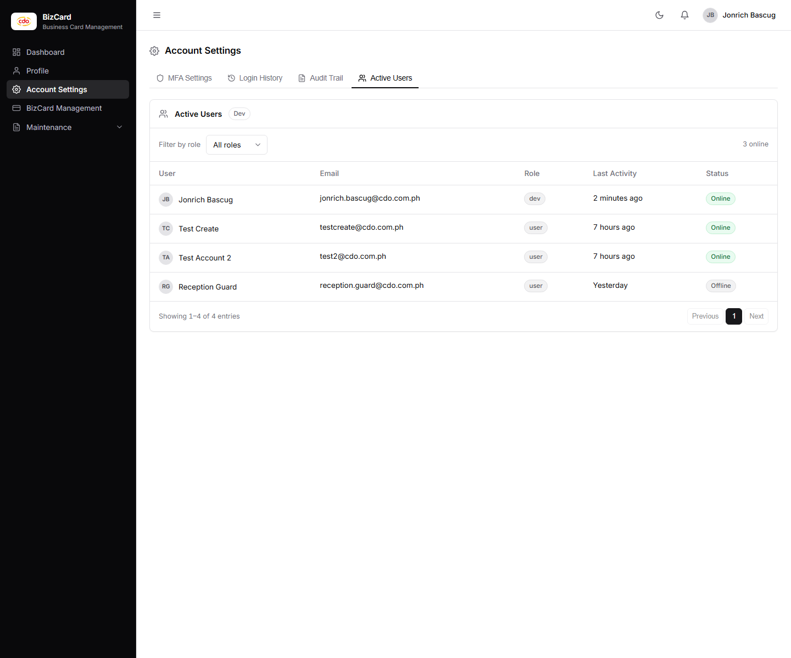

Redesigning internal security & admin tools
I build and secure internal systems for a large enterprise — and I also design them. These three screens are real shipped systems (complaint tracking, clinic, business card management), rebuilt in a modern component language: consistent density, calmer chrome, and clearer hierarchy.
Redesigns of systems I maintain and support. All names, timestamps, IPs, and records shown are dummy data. The original screenshots are the "before" state.
CCTR — Audit Trail
Complaint trackingTightened the audit table: consistent action badges, quieter chrome, tabular numerals for scanability, and search placed where the eye lands first. Same data — far less visual noise.


Clinic Information System — MFA Settings
Clinic operationsReplaced stacked alert boxes and default radio controls with one clear method-selection card, so the security-vs-friction tradeoff is legible at a glance.


BizCard — Active Users
Business card managementTurned the active-users list into a scannable roster: role filtering, status chips, avatars, and a clear column rhythm instead of an undifferentiated grid.

